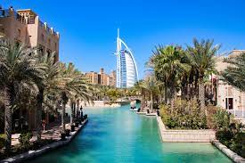

Where I have visited
Germany

Germay is a very fun country to travel to. It has different tourims acitvites that you can do there. It is known for its parties and night life. Alos, it does have lots of meusems and cool places to visit if you are into history and architecute.
There are lots of coffeshops and resturants that you can explore different foods from different cultres.
Tips
- Take warm clothing
- scheudle you day so you can use your time perfectly
- Try the sausage and potato dish
- you can use your credit cards while visiting there
- Visit Berling if you want to want to party
Malaysia
Malaysia is one of the places that you should visit at least once. I have been there twice and each time I explored different things. The food is aboslutley amaizng and elicous and you should deffinitly try chinese, and Inidan food there.
the Nature and histoy bulidng are fasinatiting and I would recommend to visit Penang while you are there.
Tips
- Bring sunscreen
- visit KL, Penang and JB
- Check out locat shops
Dubai
If you want to experience a luxury hotels, resturants and acitvites, Dubai is the place to go. THe weather is warm and you can enjoy lots of acitvites such as baoting, shopping. The food is really yummy and you should check out different beaches and relax.
At night, there are multiple acitvites to do. you can enjoy the performances and the bars. Also, you can walk around the citites and enjoy the lightings and building views.